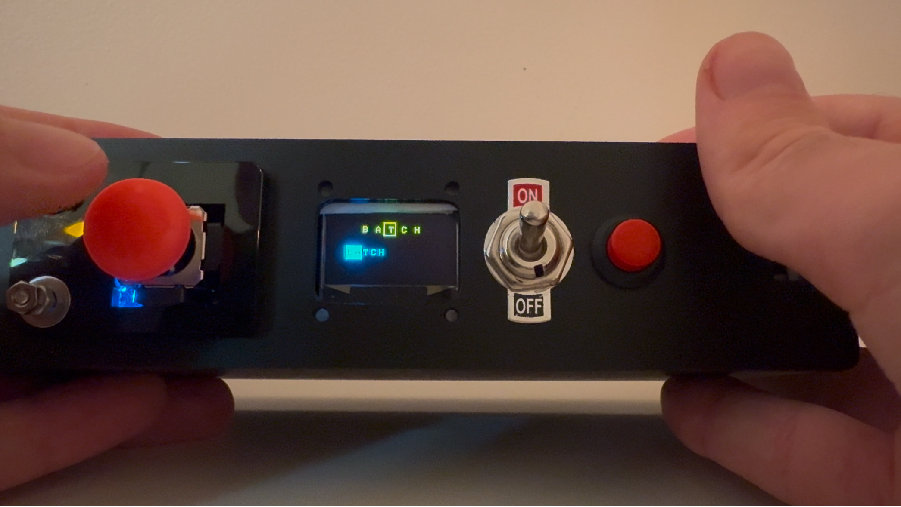
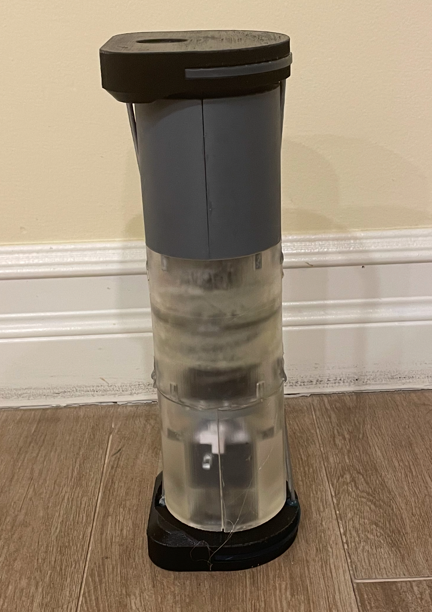
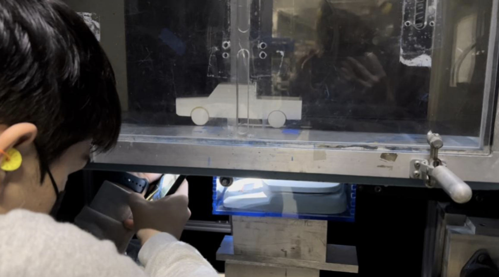

Handheld Wordle (Jordle)
Joshua Ashvil's Work Portfolio
Projects


Autonomous Mobile Robot
Sumo Robot
The Nepipen
The BraceYourself
Improving Pickup Truck Aerodynamics
Telescopic Arm Climbing Device
Handheld Wordle (Jordle)
The Problem:
Wordle is a popular game developed by the New York Times that challenges players to guess a 5-letter word in 6 tries or less. As the user guesses words, clues are left on whether letters are placed correctly (the game rules are attached in the image below). Unfortunately, only one word is released daily, so if a user wants to play again, they have to wait until the next day. To solve this, I created a handheld Wordle Game, Jordle, allowing users to play as many times as they want.
Skills Used: C++ · Arduino IDE · Laser Cutting · Computer-Aided Design (CAD) · 3D Printing · Electronics · Design
Wordle Rules:

How It Works:
An Arduino Nano was used to power this device, and it is connected to a single joystick, pushbutton, 0.98-inch OLED Display, and power switch. The circuitry was first modeled in simulation software, where the game code I created was initially tested. The game code follows the same logic as the original (selecting a random 5-letter word each time it is turned on), but with the color limitations of the OLED display a green letter indicator was changed to a filled rectangle around the letter, and a yellow letter indicator was changed to a hollow rectangle. The user creates words using the joystick to scroll through the alphabet and uses the red push button to enter the word. In addition, when the user holds down the joystick, they get to see what letters they haven’t tried yet. Lastly, this game also features a 2-player mode, where users can compete against one another to see who guesses the word faster. Once the code was completed in simulation, a CAD model for the housing was created and manufactured using 3D printing and laser cutting, the circuit was wired and mounted, and the code was uploaded to the Arduino.
Circuit Diagram:

CAD Model:
Challenges:
The biggest challenge of this project was dealing with the limited memory of the Arduino Nano. Since the dictionary of 5-word English letters contains well over 3500 strings, the Arduino quickly ran out of memory when it was loaded in as an array. At first, I tried using an Arduino micro SD card module to store the array, but that too used up too much memory. Thus, I encoded the dictionary to eliminate the use of the large 8-bit ASCII characters (with the help of sources that have achieved this before) and reduced the size of the array by over 50 percent. The second challenge of this project was mounting the electronic components to my housing. The OLED display was originally supposed to be mounted using four M2 bolts, but this broke the screen due to its fragility. Thus, I used a strong adhesive instead which fixed this issue. Additionally, the joystick top was too large and kept getting caught on the housing, so I 3D printed my own joystick top modeled after a Nintendo Switch JoyCon joystick, and this worked much better.
Result:
The resulting game was well-received by those who played it, and users responded well to the portability and simplicity of the device. Today, I am using this game as a way to pass the time on my commute to school! A video of me playing the game can be found below:
Game Walkthrough:
Autonomous Mobile Robot
The Problem:
My team was tasked with creating an autonomous robot for the 2024 Cooper Union Robot Tank Battle competition. The competition's primary goal is to accumulate points by launching 40 mm ping-pong balls at the opponent’s home base or robot. The home bases and robots are equipped with infrared (IR) light markers for detection. Additionally, robots must navigate an arena with randomly placed obstacles, and be able to return to its starting position (home base).
Skills Used: C++ · Arduino IDE · Laser Cutting · Computer-Aided Design (CAD) · 3D Printing · Electronics · Design · Manufacturing
How It Works:
Attached below is the CAD model of the robot, which has many subassemblies that help it come together. The first is the motor subassembly, which features two 12V 41-rpm motors attached to a 4-inch wheel using a custom adapter machined out of aluminum. The front wheel is a 1.5-inch diameter ball castor. These motors are attached to a chassis, which has a puzzle-piece-like structure of ⅛’’ acrylic plates and a 3D-printed front. To shoot the ping pong ball, a 12V linear solenoid is mounted on the top of the robot to perform this task with ease. For the electronics, an Arduino Mega is used as the microcontroller, alongside an L298N motor driver and an array of 5 Ultrasonic and 5 IR sensors. The robot is powered by a 12V battery with a kill switch. The array of 5 ultrasonic and IR sensors allowed us to successfully implement a state-machine program that successfully avoided all obstacles and had a wide range of IR light detection. When the middle 3 IR lights detect the light, the robot shoots and turns around. When the side IR sensors detected the light, the robot would turn and move back to align its shooter with the IR light before shooting.
Robot CAD Model:

Chassis Subassembly:

Sensor Subassembly:
Solenoid Subassembly:

Circuit Diagram:
Challenges:
In the building process, we encountered an issue with our Arduino resetting over and over. This happened because when transitioning from moving forward to backward, the current change was so much in the motors that the Arduino reset. In addition, the motor wires were tangled into the motor driver signal wires, disrupting the Arduino. We fixed these issues, replaced our Arduino as well as many of the other components, and rewired the whole robot, ensuring it would work properly. We also had issues with our voltage regulator getting extremely hot, well over proper operating temperatures. To fix this issue, we bought heatsinks and put one on the voltage regulator.
Result:
In the competition, the robot was very successful. This robot was the only robot to complete all four class achievements: shooting another robot, traversing halfway through the arena and returning to home base without any collisions, shooting the enemy home base, and completing an entire round without any collisions. This highlighted the success of obstacle avoidance, IR detection, and ping-pong ball shooter. The robot won 3 rounds and tied 2 rounds, becoming the 2024 competition winner.
Completed Robot:
Robot Test Run:
Sumo Robot
The Problem:
My team was tasked with creating an autonomous sumo robot that could push another robot out of a 3x3 ft enclosed area. The field is made out of a 3x3 ft sheet of black neoprene rubber, with all the edges being white. The edges are a different color so robots could use provided IR sensors to sense them and move back into the field. The robot budget was 200 dollars, and teams were expected to use an ATMega328P microcontroller, SNAP programmer, IR sensors, and L298N motor driver.
Skills Used: C++ · Laser Cutting · Computer-Aided Design (CAD) · 3D Printing · Electronics · Design · Manufacturing · Microchip Studio
How It Works:
Attached below is the CAD model of the robot, which has many subassemblies that help it come together. The first is the motor subassembly, which features two 12V 41-rpm motors attached to a 4-inch wheel using a custom adapter machined out of aluminum. These motors are attached to a chassis, which has a puzzle-piece-like structure of ⅛’’ acrylic plates and a 3D-printed top lid. The front of the lid has a piece of 1/16’’ aluminum mounted to it as a wedge to get up under other robots. For the electronics, the robot is powered by a 12V battery with a kill switch and uses an L298N motor driver to move the motors, and an ATMega328P as a microcontroller. The microcontroller used a SNAP programmer to have a program written to it, that simply used the two IR sensors to detect if the edge was found, and if so, maneuver back into the field.
Robot CAD Model:
Motor Subassembly:
Chassis Subassembly:

Circuit Diagram:
Challenges:
The main challenges of this project arise from the electronics. We were given an ATMega328P microcontroller with a SNAP Programmer, which was very unintuitive to use compared to an Arduino, so there was a lot of troubleshooting involved in getting the robot’s code to upload properly. In addition, the IR sensors we were using were very poor and required constant recalibration when room environments changed. In the future, we would implement a better wire management system to prevent potentially dangerous voltage errors (which destroyed one of our SNAP programmers), as well as use less sensitive IR sensors.
Results:
In the competition, the robot was very successful. It was able to win two of the three rounds it participated in and demonstrated the ability to stay inside the field unless pushed out. What caused it to lose one round was the wedge not performing as well as intended and the motors not being powerful enough to push the other robot out of the ring. These are fixes my team would make to improve the robot in the future.
Completed Robot:

Robot Battles:
The Nepipen


The Nepipen is a double-dose epinephrine autoinjector, using a one-vial ejection system, for those who need more than one dose of epinephrine in anaphylactic shock. Our initial goal of ensuring compactness (1.5 inches wide and 5.5 inches long), safety, and intuitiveness was accomplished.
The BraceYourself
The BraceYourself is a portable, collapsible limb splint for those who hike, ski, or do other highrisk sports. The device is completely adjustable in length, can be put on with one arm, and fits into a user's backpack with ease. Most importantly, it is sturdy enough to support a broken limb, which prevents injury from worsening. These key objectives were achieved by surveying medical experts and our potential customers to meet their needs.
Improving Pickup Truck Aerodynamics


Currently, most pickup trucks have a very poor aerodynamic design, reducing their efficiency. To fix this issue, a removable bed cover was created, which is inspired by the aerodynamic shape of the Boxfish. After simulation and real-world testing, the improvements led to an increase of 1.5 miles per gallon (surpassing the initial goal of 0.4 mpg), which can save consumers an average of $2,000 over the lifespan of the truck. The simulations were done using STAR-CCM+ and the real- world testing was done using a wind tunnel. A mounting procedure was created that allowed for the measure of drag force on a prototype using a scale and L bar, as the lab did not have sensors available to measure the force.
Telescopic Arm Climbing Device
This mechanism aimed to help a robot (120 pounds in weight) climb and stay up on a pole, roughly 5 feet in the air. The device utilizes a Falcon 500 motor to help unspool spring steel to raise and lower the arm. In addition, a ratchet mechanism is employed to prevent fallback as the robot is raised up.